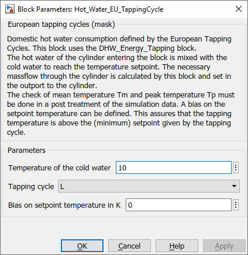

Hot_Water_EU_TappingCycle
Path:
CARNOT/Load/Hot_Water_Tapping
Purpose:
Hot water consumption with an energy profile.
Description
There are different methods to evaluate the hot water comfort (see QAIST 2012).
To create a tapping massflow in the THB the hot water of the cylinder entering
the block is mixed with the cold water to reach the temperature setpoint.
The necessary massflow through the cylinder is calculated by this block and
set in the outport to the cylinder.
In this model the domestic hot water consumption defined by the European Tapping
Cycles as specified by European
Commission reglulation (EU) No 814/2013 of 2 August 2013.
This block uses the EU_Tapping_Cycle and the DHW_Energy_Tapping block.
More details about the model and the EU tapping cycles can be found in the presentation of [Hafner 2021] at the Carnot User Meeting 2021.
Hint: The tapping cycles define a massflow. In this block the
massflow is interpreted to be the outlet massflow at the water tap. Typically
when testing a hot water cylinder the test institute applies the massflow to the
cylinder. If the temperature of the water outlet of the cylinder is higher than
the setpoint, the resulting flowrate at setpoint is higher than the massflow of
the tapping cycle.
Input:
| THBcylinder | : | Thermo-Hydraulic Bus of the hot water flow from the dhw cylinder |
Output:
| THB_cylinder | : | Thermo-Hydraulic Bus of the cold water flow to the dhw cylinder |
| THB_tap | : | Thermo-Hydraulic Bus of the mixed water flow to the tap |
| Tset | : | setpoint temperature in °C |
| DHWdat | : | data output of the block |
The data output of the block DHWdat can be used for data logging during a simulation.
DHWdat:
| THBcylinder | : | Thermo-Hydraulic Bus of the hot water flow from the dhw cylinder |
| THB_cylinder | : | Thermo-Hydraulic Bus of the cold water flow to the dhw cylinder |
| THB_tap | : | Thermo-Hydraulic Bus of the mixed water flow to the tap |
| Tset | : | setpoint temperature in °C |
| Tc | : | cold water temperature in °C |
Parameters and Dialog Box:

Examples:
Open the example explorer from the Matlab command window
ExampleBrowser
or load the examples via the CARNOT library.
Literature:
COMMISSION REGULATION (EU) No 814/2013 of 2 August 2013
Characteristics:
| Direct Feedthrough | : | Yes |
| Sample Time | : | Inherited from driving block |
| Vectorized | : | No |